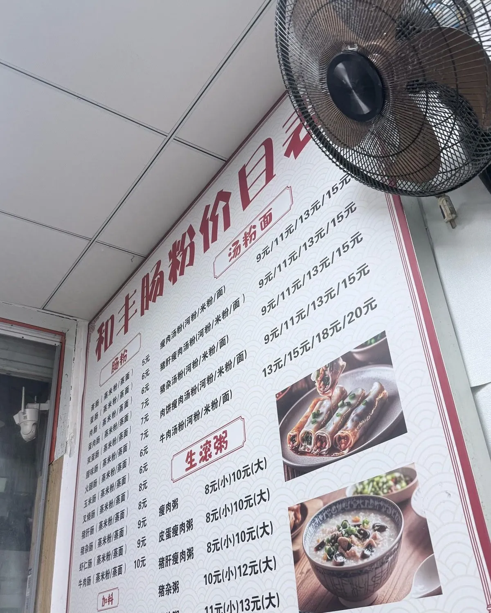
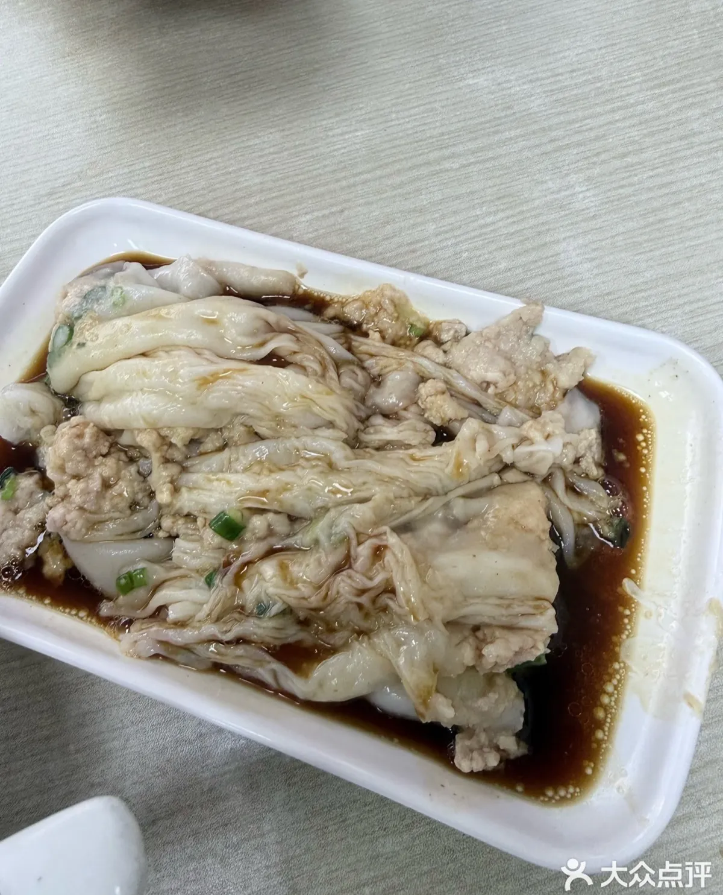
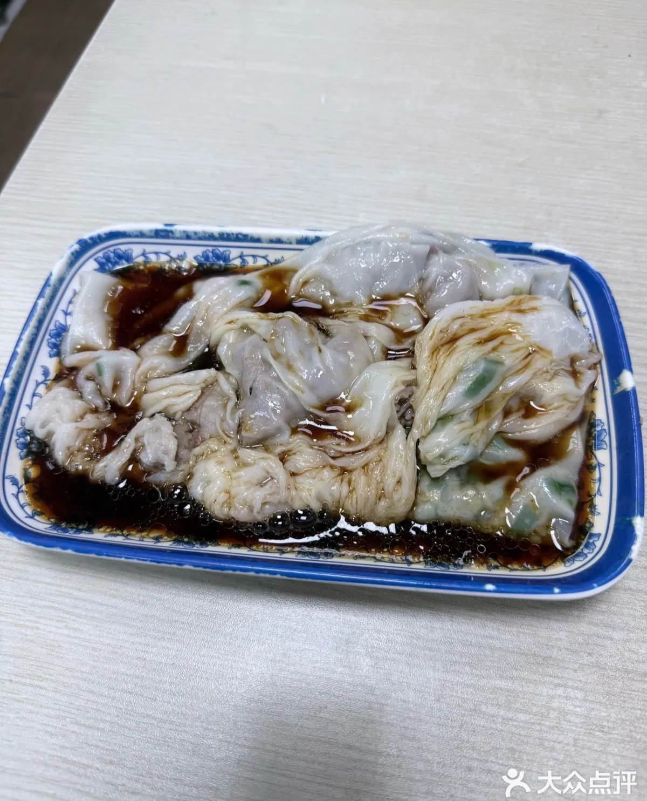
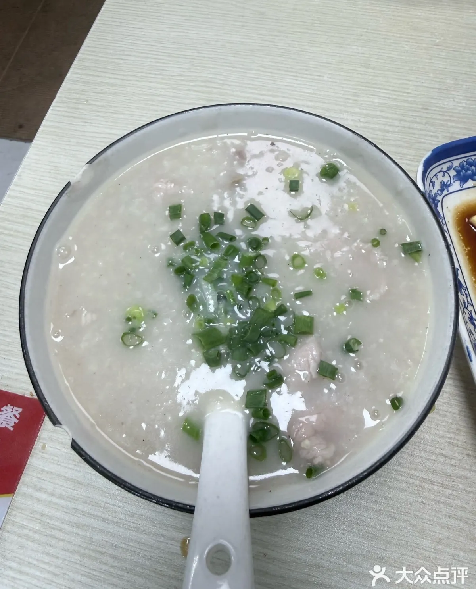
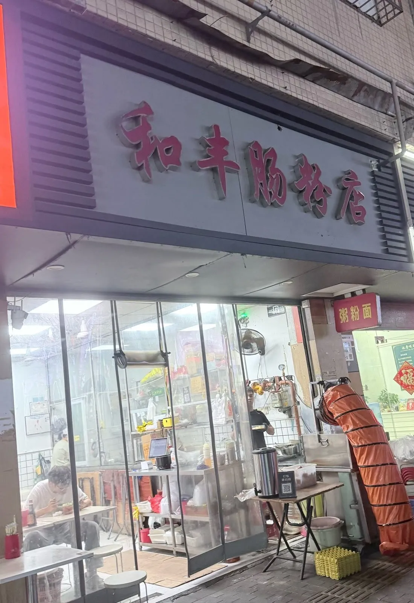

坪洲和豐腸粉店：兩日實食 ¥38，腸粉比粥更值得點
和豐腸粉店在寶安坪洲，網上不少人專程去吃。這次在 2026 年 11 月連續兩次到訪：星期五晚吃牛肉腸粉配小份豬雜粥，星期六早再吃雙肉腸粉配小份牛肉粥，兩餐自費合共 ¥38。結論很直接：值得為腸粉而來，軟滑、不粘牙，還有一股少見的燒香鑊氣；粥不是差，只是沒有腸粉那麼突出。
兩次點餐：兩餐 ¥38
兩次都按實際點餐記錄，沒有用平台人均代替本次消費。星期五晚是 ¥20，星期六早是 ¥18，合共 ¥38。以下餐牌照片用來對照本次項目；其他沒有吃過的菜式不逐款推薦。

這裡的「小份」不是港式茶餐廳常見的一小碗。兩次點粥都選小份已經很足夠，配一碟腸粉剛好。其他實食紀錄同樣只記親身吃過的項目；同區商場餐廳可對照樂凱撒披薩（寶安大仟里店），另一種腸粉風格則可看西關明記腸粉（荔灣店）。
當日紀錄
到訪日期：
兩次點餐：
兩餐實付：
營業時間：
地址：
點去：
招牌腸粉：軟滑不粘牙，還有燒香鑊氣
第一口最特別的不是餡料，而是腸粉本身。粉皮軟綿、入口軟滑，但不會粘牙；更意外的是有一股類似燒香的鑊氣，與平常只有米香和豉油味的腸粉不同。牛肉鮮嫩是加分位，不過這次最深刻的仍是粉皮和那股香氣。

店內觀察也呼應這一點：大部分食客都以腸粉為主，旁邊一對情侶更直接疊著點了三碟。這只是本次現場所見，不是銷量統計，但確實與自己吃完後的判斷一致——如果只吃一款，應先點腸粉。

生滾粥：小份已大碗，表現中規中矩
粥有大、小份之分，這次兩次都選小份。端上來非常燙嘴，而且份量本身已經不小；一個人配腸粉，沒有必要為了飽肚直接點大份。

豬雜和牛肉都新鮮，但與其他老字號生滾粥相比，這次沒有吃到很明顯的差異。不是粥不好，而是腸粉太有記憶點。所以點單建議是：小份粥用來配腸粉剛好，不需要為了粥專程跑一趟。
人流與環境：周六早真的多人

星期五晚已經有不少人，到了星期六早，門口排隊點外賣和取號等位的人流更明顯。本次亦見到旁邊同類店相對冷清，但這只是兩次到訪的現場情況，不代表每日固定如此。怕等的話，避開周六早上高峰或直接打包會較實際。
另一個加分細節是免費豆漿。可以自備杯子，也可用店裡的杯子接一杯；在吃腸粉和粥時很實用。這項安排來自本次到訪記錄，日後是否維持，仍以店方現場安排為準。
平台快照、現場觀察與本次判斷
平台快照：
排隊情況：
免費豆漿：
本次判斷：
總結：為腸粉而來，不為打卡而點大份
這次兩餐的結論不是「網紅店一定值得」，而是招牌腸粉本身確有特色。燒香鑊氣、軟滑不粘牙，加上牛肉鮮嫩，使它與一般腸粉店有明顯分別。粥則是新鮮、足料、合理，但沒有同樣強的記憶點。
如果你本來就在坪洲附近，或者特別喜歡腸粉，這次經驗值得參考。點一碟招牌腸粉，再配小份粥已經很足夠；周六早去就預留排隊時間，或者直接打包。
常見問題
兩次點了什麼，合共多少錢？
星期五晚是豬雜粥小份 ¥10＋牛肉腸粉 ¥10；星期六早是雙肉腸粉 ¥7＋牛肉粥小份 ¥11。兩餐自費合共 ¥38，這是本次點餐記錄，不是平台人均。
粥和腸粉，哪一款更值得點？
本次首選是腸粉：粉皮軟滑不粘牙，還有少見的燒香鑊氣。粥的用料新鮮，但表現中規中矩；選小份配腸粉已經很足夠。
星期六早上去有什麼要注意？
本次周六早見到排隊點外賣及取號等位的人流，建議避開高峰或打包。免費豆漿可自備杯子，也可用店裡的杯子；是否繼續提供以現場為準。